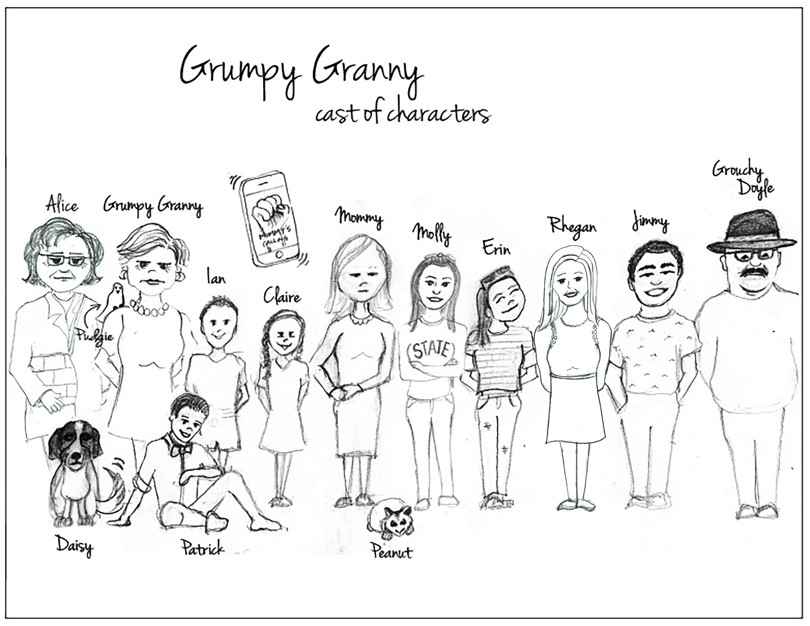

Here is one of my sketches!
Click the picture to download it!

Evolution of the Grumpy Granny Character
The “Grumpy Granny” character evolved out of a tragedy in our family, which occurred several years ago. As a result, there was a need to help raise 2 young children. Fortunately, I was healthy enough to step in and do this. Raising children for a second time can make a person somewhat grumpy, with the normal squabbling, etc., that comes with the territory. The “Grumpy Granny” comic strip is an autobiographical account of what has happened to me since. I am “Grumpy Granny”. Seniors in society today can identify with Grumpy Granny since vast numbers are also helping to raise their grandchildren. This may be due to death, divorce and other circumstances. I surmise that a significant percentage of newspaper readers are seniors, who can totally relate to what “Grumpy Granny” goes through on a daily basis. Wherever I go, I meet people who are caring for young children on a part-time basis or, like me, actually live with them – and they admit they are very grumpy. In the strip, there are 11 human characters, 3 animal characters and a “phone” character, which symbolizes the “Mommy” character calling Grumpy Granny to express anger from time to time. The Mommy human character never actually appears, although there is a generic character drawn in for her. In the premier strip, Grumpy Granny is moving into her daughter’s home in Cranky Estates to help raise her two grandchildren, Ian and Claire. She finds herself in countless categories of problematic situations with these children. No explanation is given for the reason Grumpy Granny is helping to raise the kids. That leaves things open to conjecture. I believe the premier strip should be repeated several times within the first two weeks of publication, offering the main idea to many senior readers. With the aim of building longevity into the strip, I have created several sub stories. These sub stories fold themselves into the core story from time to time. Sub stories to date are: Formation of Grumpy Grannies International, created in conjunction with Grumpy Granny’s lifelong friend “Grandma Alice.” Together, they appear before the United National Subcommittee on Grumpiness to explain their mission. This mission takes them to many countries where they are received with much acclaim by other grumpy grannies. The #GrumpyToo movement is an offshoot of Grumpy Grannies International, and develops many hilarious events. Formation of the Grumpy Granny Shopping Channel, where grannies can purchase stylist clothing not available to them in mainstream clothing stores. The Grumpy Granny talk show is another sub story, similar to Oprah’s first shows in Chicago when she was first starting out. Many problematic topics are discussed which seniors can relate to. At the end of each show, audience members find a fashion item taped under their seat. These items are part of the Grumpy Granny clothing line on her shopping channel. Formation of the Grumpy Granny cruise line offers grannies a respite from their daily assignments. Grumpy Granny is on the cruise to offer emotional and psychological support. Creation of Grumpy Granny’s Neighborhood (similar to Mr. Rogers’ Neighborhood). This sub story introduces characters who live or offer services in Grumpy Granny’s neighborhood in Cranky Estates. For example, the postal lady, the police officer, the teacher, the banker, the real estate agent, are just a few examples of characters moving in and out of the script. All above sub stories move in and out of the main story to provide variety and longevity. The artist and I are submitting 31 strip “ideas” for your perusal. However, there are 200 categorized and available upon request.
~ Donna Doyle Author Austen Redinger Cartoonist
Here is one of my sketches!
Click the picture to download it!
Characters
This picture is all the characters in The Grumpy Granny Comic Strip. Click the picture to download it!
{kind=link}